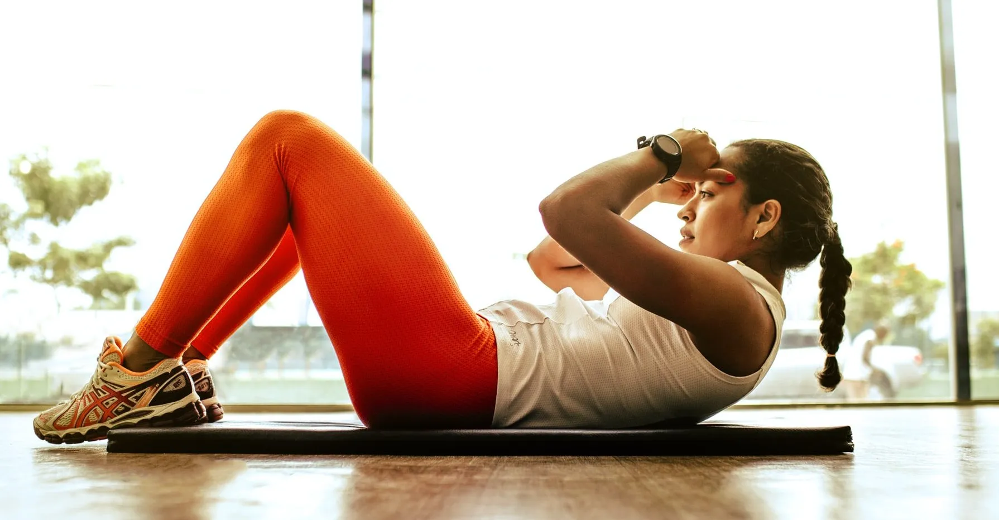
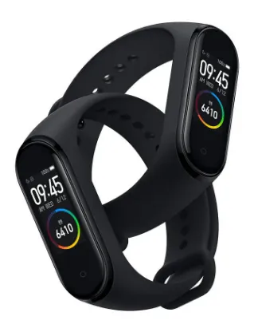
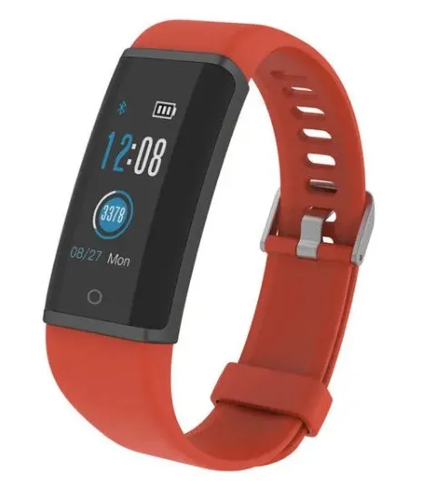

Fitness trackers are everywhere. If you’re thinking about
buying one, you might be pondering two key questions: “Can
they actually help?” and “Is there one that’s right for
me?”
Yes, they can help. Fitness trackers can tell you how
many calories you’re burning, how many steps you’re
taking, how far you’re running, how you’re sleeping at
night and a lot more. Just know that the numbers they
provide, which can vary in accuracy, are no substitute for
an overall health assessment that you’d get from a doctor.
And from a workout perspective, if you’ve worked with a
trainer and have a plan for reaching
your health and fitness goals, you already know what you
need to succeed — so a tracker would be a bonus.

Still, trackers are an excellent motivational tool. They
can spur you on to meet a goal, show you the progress
you’re making in real time and make competition with
friends fun. (Come on — you can beat your co-workers,
right?) Trackers just can’t do the work for you. Just as
with any piece of exercise equipment, you need to commit.
So to get the most out of a tracker, dedicate yourself to
using the numbers to change your habits, whether it’s
adding that walk after dinner or cutting out that bag of
chips at lunch.
When it comes to picking the fitness tracker that’s right
for you, the different options—look, price, battery life,
ease of use—can make the process overwhelming. Consider
this post only a starting point. Before you buy anything,
read comprehensive reviews that involved some serious
tire-kicking. There will be pros and cons to everything. Consumer
Reports, Wirecutter,
Wareable,
Digital Trends and
TechRadar are
among the resources that can arm you with the information
you need.
Models to consider
Here are a couple of trackers that have received
consistently high overall marks. All the trackers
mentioned in this post are compatible with most fitness apps.
Xiaomi Mi band 4. Along
with having the standard features (measuring steps,
monitoring heart rate, counting calorie burn, tracking
sleep), this tracker has been noted for its relative
accuracy and ease of use. It also has female health
tracking features.

Xiaomi MI Band 4
Lenovo HX03F HD. It
has a slim wristband, advanced sleep monitoring and a
“body battery” that estimates how much energy you have
left.
If you’re looking for trackers that fit your specific
workout preference, check these out.

Lenovo HX03F HD
If you love: Running
Consider: Look for tracker features
like distance, pace, lap time, total running time, GPS and
a heart rate monitor. For heart rate monitors, remember
that it helps to understand what the heart rate numbers
mean.
Notable trackers: Garmin Vivosport,
Garmin Forerunner 645,
Huawei Honor Band 5

If you love: Swimming
Consider: Some trackers offer
features such as stroke detection and can measure lap and
distance. Look for trackers with a bright enough screen so
you’ll be able to see in the water. You may see a feature
about water resistance describing ATM. That’s a
measurement of atmospheric pressure. For example, 5 ATM
means the tracker is resistant up to five atmospheres (the
standard pressure at sea level is 1 ATM) and should
operate in the water under typical swimming conditions.
Notable trackers: Fitbit Ionic,
Fitbit Versa, TomTom Spark 3
If you love: Cycling
Consider: You’ll want GPS, but keep in
mind that the technology can vary in sophistication. Smart
watch options will enable you to stream music while
pedaling. And when considering battery life, be aware that
the duration can be affected by other features you’re
using.
Notable trackers: Garmin Forerunner
935, Garmin Vivoactive 3, TomTom Multi-Sport GPS Watch